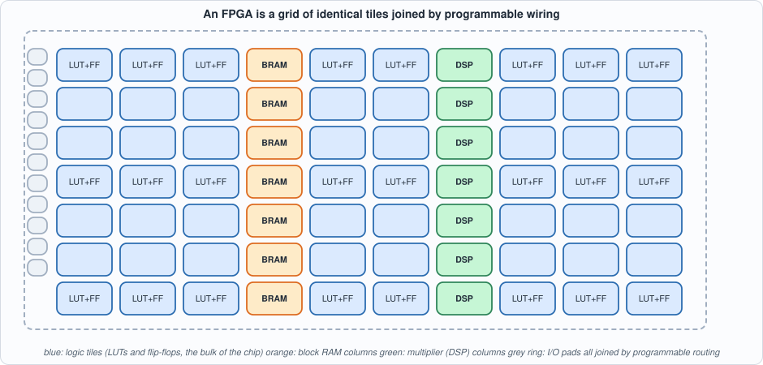
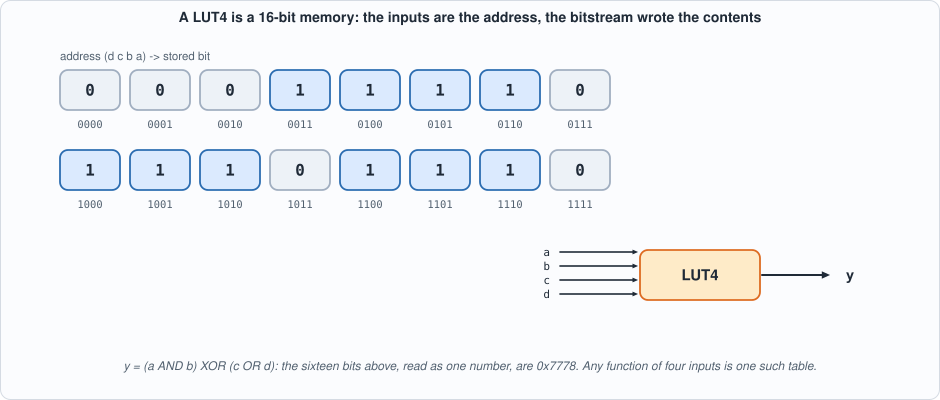
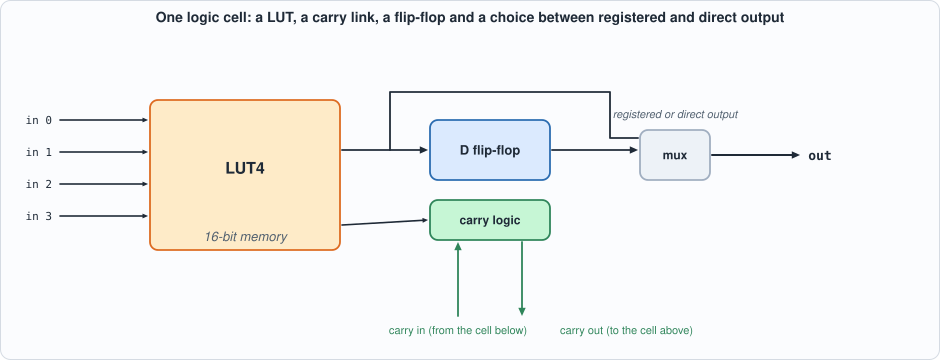
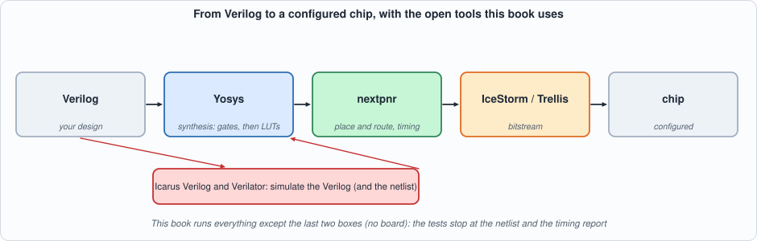
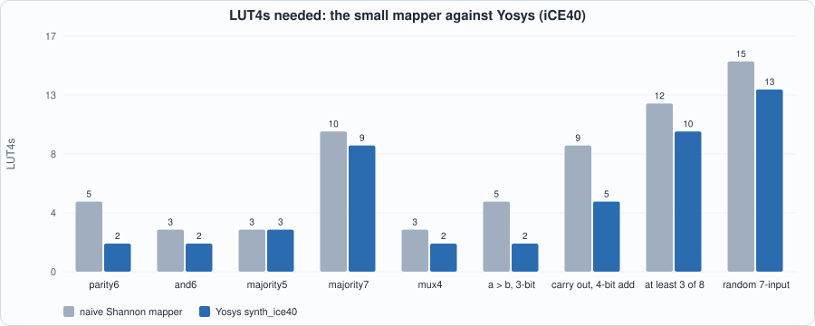
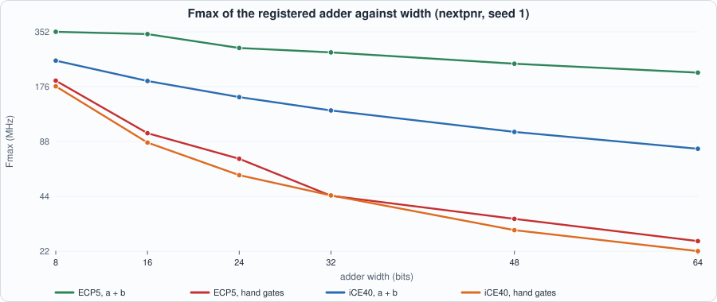
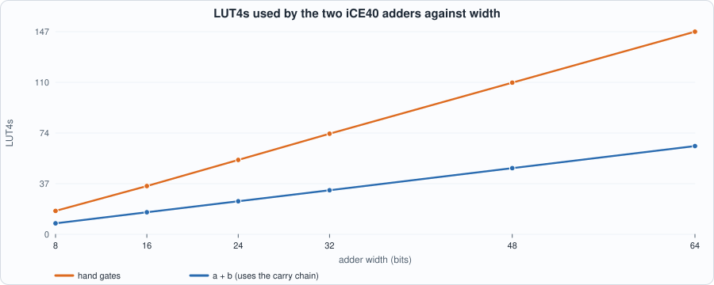
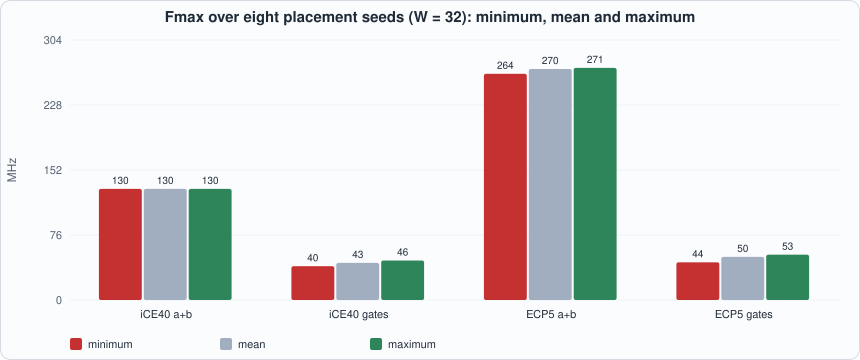

1. What an FPGA Is: Lookup Tables, the Carry Chain, and the Open Flow¶
About the kestrels in this picture
- Common kestrel (Falco tinnunculus) ranges across Europe, Asia and Africa. It is famous for hovering: it faces the wind and holds its head almost still while its body adjusts, searching the ground below before it drops onto prey. A much-cited study reported that voles' scent trails reflect ultraviolet light, which kestrels may be able to see.
- American kestrel (Falco sparverius) is the smallest falcon in North America and is found from Alaska to South America. The sexes differ in plumage: males have blue-grey wings, females are barred rufous. It hunts insects and small vertebrates from perches and by hovering.
The scene is imaginary and the birds are stylised drawings.
What you will see: the inside of an FPGA, built up from one idea: a lookup table is a tiny memory whose contents are the logic. A model of that fabric in Python maps functions onto lookup tables and is compared with Yosys; then one circuit, a registered adder, goes through the whole open flow (golden model, two simulators, synthesis, place and route) for two real devices, a Lattice iCE40 and a Lattice ECP5, and the result teaches the first rule of FPGA design: the same arithmetic runs two to eight times faster when you write it so that the tool can use the fabric's carry chain. Every test is then tested by mutation.
What you need to know first: nothing about FPGAs. You should be able to read a short piece of Verilog and Python; the Capra book's Appendices A (digital logic) and B (Verilog) cover the background.
What this chapter builds: tools/flow.py (the book's wrapper around Yosys and nextpnr), model/lut_fabric.py (a LUT model and a small technology mapper), model/radd_gold.py (golden model and vectors), rtl/radd.v, tb/radd_tb.v, tools/ch01_run.py, tools/mut_ch01.py and the running examples tools/ch01_example_a.py and tools/ch01_example_b.py.
Why an FPGA, and what it is not¶
A field-programmable gate array is a chip whose logic is configured after manufacture. Its configuration (the bitstream) is loaded at power-up and says what every logic element computes and how they are wired together. Three other ways of computing sit around it:
| what you write | how it runs | strength | weakness | |
|---|---|---|---|---|
| CPU | software | instructions, one thread after another | flexible, easy | each step takes many cycles; latency varies with caches and the operating system |
| GPU | software (kernels) | thousands of lanes in lockstep | throughput on regular data parallelism | fixed architecture; batching adds latency |
| FPGA | a hardware description | a circuit that exists all the time; every stage works in parallel | deterministic latency in clock cycles; custom datapaths; direct access to network and I/O pins | harder to design; slower clocks (hundreds of MHz); larger and costlier per operation than an ASIC |
| ASIC | a hardware description plus a factory | a fixed circuit | the fastest and cheapest per unit at volume | years and millions to build; cannot be changed |
The property that matters for this book's main case study is the third row: an FPGA design that reads packets off a wire, parses them and answers is a pipeline of circuits, so the answer arrives a fixed number of clock cycles after the last input bit, every time. That is what "deterministic low latency" means, and it is what the trading chapters (Parts 2 to 7) are about. Other chapters use the same fabric for signal processing, security and machine learning.
The fabric¶
An FPGA is a grid of logic tiles with columns of other resources, surrounded by I/O, and joined by a mesh of programmable wiring (the routing) that takes most of the chip's area and most of the delay of a typical path.

Figure 1.1: the fabric, schematically. Real devices have the same elements in other proportions.What the two devices of this book contain is not a matter of memory: nextpnr lists their resources. The recorded output of tools/ch01_run.py (section 4 below) shows, for the iCE40 HX8K: 7,680 logic cells, 32 block RAMs of 4 Kbit, 2 PLLs, 256 I/O. For the ECP5 LFE5U-25F: about 24,000 logic cells, 56 block RAMs of 18 Kbit, 28 multipliers of 18 x 18 bits, 2 PLLs, and a multi-gigabit serial transceiver block (DCUA), the part real Ethernet needs and that Part 2 models at its interface instead of implementing.
The lookup table¶
The unit of logic is the LUT4: a 16-entry memory with four address inputs. The inputs are the address, the stored bit at that address is the output. Any function of four inputs is one LUT4, because a function is nothing but a truth table and the LUT is a truth table stored in memory. The 16 bits come from the bitstream.

Figure 1.2: a LUT4 holding y = (a AND b) XOR (c OR d). The sixteen bits, read as a number, are 0x7778: this number is the logic. There is no AND gate and no XOR gate in the fabric.Larger functions need several LUTs. A five-input function does not fit in one; a six-input one needs at least two and often more, depending on its structure. So depth in LUTs is the first thing that costs time in an FPGA: each LUT adds a delay, and each hop between them adds more (the routing).
The logic cell: LUT, flip-flop and carry¶
A LUT alone is combinational. Next to each LUT sits a flip-flop that can capture its output on a clock edge, and a multiplexer that chooses between the LUT's direct output and the registered one. Together they form a logic cell.

Figure 1.3: one logic cell, simplified. The carry link is the third element and the one that matters for arithmetic.Adders need a signal that ripples from the least significant bit upwards. Through ordinary routing that signal would pay a LUT delay and a routing delay at every bit. So every FPGA family adds a dedicated carry chain: a hard-wired path from each logic cell to the next one, much faster than general routing. The tool uses it automatically when you write a + b; it cannot use it for a carry you build out of gates. Example B measures the difference.
The other resources¶
- Block RAM (BRAM): columns of dense memory, 4 Kbit (iCE40) or 18 Kbit (ECP5) per block, with one or two ports. Much cheaper than building memory from LUTs and flip-flops (which you can: a LUT is itself a 16-bit memory, called distributed RAM). Order books, FIFOs and packet buffers live here (Parts 2 to 4).
- DSP blocks: hard multipliers (18 x 18 on the ECP5), often with an accumulator. A multiplier built from LUTs is large and slow; the hard one is neither.
- Clocking: PLLs generate and align clocks; dedicated global clock networks distribute them with little skew. Chapter 3.
- I/O: pads with programmable standards; the transceivers (ECP5
DCUA) sit here.
The open flow, and how to install it¶
From a design to a configured chip there are four stages. This book uses open tools for the first three:

Figure 1.4: the flow. Simulation (red) checks the design at the Verilog level and can be repeated on the netlist; synthesis (Yosys) turns Verilog into LUTs and flip-flops; place and route (nextpnr) decides where each goes and how they are wired, and reports the timing.- Synthesis (Yosys
synth_ice40orsynth_ecp5): reads Verilog, optimizes, and maps it to the family's cells (LUTs, flip-flops, carry cells, RAM and DSP blocks). Output: a netlist (JSON). - Place and route (nextpnr): chooses a location for every cell and a path for every wire, minimizing delay against the clock you ask for, and reports the maximum frequency (Fmax) the placed design can reach.
- Bitstream (IceStorm for iCE40, Project Trellis for ECP5): writes the configuration file. This book stops before this stage (no board).
- Simulation (Icarus Verilog and Verilator): every test of this book runs in both, as in the Capra book.
Installing on a Debian or Ubuntu system (the book was built on Ubuntu 24.04):
sudo apt-get install yosys iverilog verilator nextpnr-ice40 nextpnr-ecp5 fpga-icestorm python3-pip
pip install mkdocs mkdocs-material # only to build this site
Checking the install (these commands print the versions the book's numbers come from: Yosys 0.33, nextpnr 0.6, Icarus 12, Verilator 5.020):
yosys -V ; nextpnr-ice40 --version ; nextpnr-ecp5 --version ; iverilog -V | head -1 ; verilator --version
Placement is a randomized search: nextpnr takes a seed. Every number in this book is produced with a stated seed (1 unless said otherwise), and Example B measures how much the result moves with the seed.
The golden model, the circuit and the tests¶
The circuit is a registered adder: two input registers, an adder, an output register. Its golden model is one line of Python ((a + b) mod 2^(W+1)), which is exactly why it is a good first circuit: the flow, not the arithmetic, is the subject. The vectors are directed to stress the carry chain: all ones plus one (a carry through every bit), a carry that ripples through exactly k bits for every k, a carry generated at every bit position, alternating 0101 and 1010 patterns, and then 200 random pairs.
// Chapter 1: a registered adder in two styles. radd uses "+": the synthesis tool may use the FPGA's dedicated carry chain.
// radd_lut builds the carry by hand from gates, so the tool can only use ordinary lookup tables. Same function, same ports.
module radd #(parameter W = 16) (input clk, input [W-1:0] a, input [W-1:0] b, output reg [W:0] s);
reg [W-1:0] ra, rb;
always @(posedge clk) begin ra <= a; rb <= b; s <= ra + rb; end
endmodule
module radd_lut #(parameter W = 16) (input clk, input [W-1:0] a, input [W-1:0] b, output reg [W:0] s);
reg [W-1:0] ra, rb; wire [W:0] c; wire [W:0] sum; assign c[0] = 1'b0;
genvar i;
generate for (i = 0; i < W; i = i + 1) begin : fa
assign sum[i] = ra[i] ^ rb[i] ^ c[i];
assign c[i+1] = (ra[i] & rb[i]) | (c[i] & (ra[i] ^ rb[i]));
end endgenerate
assign sum[W] = c[W];
always @(posedge clk) begin ra <= a; rb <= b; s <= sum; end
endmodule
radd is written with +. radd_lut builds the carry with gates: the same function, but the tool cannot recognise it as arithmetic.
// Chapter 1 testbench: both adders (radd uses "+", radd_lut a hand-built carry) against the golden vectors, in any simulator.
// The vector file holds one word per line: {expected sum, b, a}. Inputs change at the falling clock edge and the sum of vector k is checked two falling edges later (two register stages).
`timescale 1ns/1ps
`ifndef WIDTH
`define WIDTH 16
`endif
`ifndef NVEC
`define NVEC 100
`endif
module radd_tb;
localparam W = `WIDTH, N = `NVEC;
reg clk = 0; reg [W-1:0] a = 0, b = 0; wire [W:0] s1, s2; reg [3*W:0] mem [0:N-1]; integer k, errs = 0;
radd #(W) d1 (.clk(clk), .a(a), .b(b), .s(s1)); radd_lut #(W) d2 (.clk(clk), .a(a), .b(b), .s(s2));
always #5 clk = ~clk;
initial begin
$readmemh("out/radd_vec.hex", mem);
for (k = 0; k < N + 2; k = k + 1) begin
@(negedge clk);
if (k >= 2) begin
if (s1 !== mem[k-2][3*W:2*W]) begin errs = errs + 1; if (errs < 5) $display("MISMATCH radd vector %0d: got %h want %h", k-2, s1, mem[k-2][3*W:2*W]); end
if (s2 !== mem[k-2][3*W:2*W]) begin errs = errs + 1; if (errs < 5) $display("MISMATCH radd_lut vector %0d: got %h want %h", k-2, s2, mem[k-2][3*W:2*W]); end
end
if (k < N) begin a = mem[k][W-1:0]; b = mem[k][2*W-1:W]; end
end
if (errs == 0) $display("PASS: %0d vectors, W = %0d, both adders match the golden sums", N, W); else $display("FAIL: %0d mismatches", errs);
$finish;
end
endmodule
#!/usr/bin/env python3
"""Chapter 1: the golden model of the registered adder, and its test vectors. The circuit adds two W-bit numbers into a (W+1)-bit sum with two register stages: input registers, then the sum register; an input pair applied before clock edge k is visible in the output after edge k+1 (two edges in all).
Vectors: directed ones that exercise the carry chain (all ones plus one, alternating patterns, a single carry running across every bit), and random ones. Each vector line is one hex word {expected, b, a}. Usage: radd_gold.py W N SEED OUTFILE"""
import random, sys
def golden(a, b, w): return (a + b) & ((1 << (w + 1)) - 1)
def vectors(w, n, seed):
R = random.Random(seed); m = (1 << w) - 1; v = [(0, 0), (m, 1), (1, m), (m, m), (0, m), (m, 0), (0x5555555555555555 & m, 0xAAAAAAAAAAAAAAAA & m), (0xAAAAAAAAAAAAAAAA & m, 0x5555555555555555 & m)]
v += [((1 << k) - 1 & m, 1) for k in range(1, w + 1)] # a carry that ripples through k bits
v += [(1 << k, 1 << k) for k in range(w)] # a carry generated at bit k
v += [(R.getrandbits(w), R.getrandbits(w)) for _ in range(n)]
return v
def write(w, n, seed, path):
vs = vectors(w, n, seed)
with open(path, "w") as f:
for a, b in vs: f.write("%x\n" % ((golden(a, b, w) << (2 * w)) | (b << w) | a))
return len(vs)
if __name__ == "__main__":
w, n, seed, out = int(sys.argv[1]), int(sys.argv[2]), int(sys.argv[3]), sys.argv[4]; print(f"{write(w, n, seed, out)} vectors written to {out}")
#!/usr/bin/env python3
"""The book's FPGA flow, wrapped in four functions (all open source: Yosys, nextpnr, IceStorm, Icarus, Verilator).
synth(files, top, family) Yosys technology mapping to an FPGA family ('ice40' or 'ecp5'); writes out/<tag>.json; returns the cell counts Yosys reports
pnr(json, family, freq) nextpnr place and route against a target clock in MHz; returns the maximum frequency it found, the logic cells used and the log
run(files, top, family, freq, params={'W': 32}) both of the above, with the counts in the vocabulary of the family (LUTs, flip-flops, carry cells)
nextpnr is run with a fixed seed so every number in the book is reproducible. 'Fmax' here is nextpnr's estimate after placement and routing on the named device with its timing database."""
import os, re, subprocess, sys
sys.path.insert(0, os.path.dirname(os.path.abspath(__file__))); from hw import ROOT, _run, sim_icarus, sim_verilator, mutate
DEV = {"ice40": ["nextpnr-ice40", "--hx8k", "--package", "ct256"], "ecp5": ["nextpnr-ecp5", "--25k", "--package", "CABGA381"]}
SYN = {"ice40": "synth_ice40 -top {top} -json {json}", "ecp5": "synth_ecp5 -top {top} -json {json}"}
LUTS = {"ice40": "SB_LUT4", "ecp5": "LUT4"}; FFS = {"ice40": ("SB_DFF", "SB_DFFE", "SB_DFFESR", "SB_DFFSR", "SB_DFFNE"), "ecp5": ("TRELLIS_FF",)}; CARRY = {"ice40": "SB_CARRY", "ecp5": "CCU2C"}
def synth(files, top, family="ice40", tag=None, params=None):
tag = tag or f"{top}_{family}"; js = os.path.join("out", tag + ".json"); script = "; ".join(["read_verilog -sv " + " ".join(files)] + [f"chparam -set {k} {v} {top}" for k, v in (params or {}).items()] + [SYN[family].format(top=top, json=js), "stat"])
rc, out = _run(["yosys", "-q", "-p", script, "-l", os.path.join("out", tag + "_synth.log")], cwd=ROOT)
if rc != 0: return {"ok": False, "log": out}
log = open(os.path.join(ROOT, "out", tag + "_synth.log")).read(); sec = log.rsplit("Number of cells", 1)[-1] if "Number of cells" in log else log.rsplit("cells", 1)[-1]
cells = {m.group(1): int(m.group(2)) for m in re.finditer(r"^\s+(\$?\w+)\s+(\d+)\s*$", sec.split("design hierarchy")[0], re.M)}
return {"ok": True, "json": js, "cells": cells, "luts": cells.get(LUTS[family], 0), "ffs": sum(cells.get(c, 0) for c in FFS[family]), "carry": cells.get(CARRY[family], 0), "log": log}
def pnr(js, family="ice40", freq=100, seed=1):
cmd = DEV[family] + ["--json", js, "--freq", str(freq), "--seed", str(seed)] + (["--pcf-allow-unconstrained"] if family == "ice40" else [])
rc, out = _run(cmd, cwd=ROOT); fm = re.findall(r"Max frequency for clock '[^']*': ([\d.]+) MHz", out)
used = re.search(r"ICESTORM_LC:\s+(\d+)/\s*(\d+)", out) or re.search(r"TRELLIS_COMB:\s+(\d+)/\s*(\d+)", out)
return {"ok": rc == 0 and bool(fm), "fmax": float(fm[-1]) if fm else None, "lcs": int(used.group(1)) if used else None, "of": int(used.group(2)) if used else None, "log": out}
def run(files, top, family="ice40", freq=100, tag=None, params=None, seed=1):
s = synth(files, top, family, tag, params)
if not s["ok"]: return s
p = pnr(s["json"], family, freq, seed); return {**s, **{k: p[k] for k in ("fmax", "lcs", "of")}, "pnr_ok": p["ok"], "pnr_log": p["log"]}
#!/usr/bin/env python3
"""Chapter 1: one circuit through the whole open flow. (1) golden vectors; (2) the registered adder in two simulators at four widths; (3) synthesis and place-and-route for two FPGA families. Usage: ch01_run.py"""
import os, sys
sys.path.insert(0, os.path.dirname(os.path.abspath(__file__))); sys.path.insert(0, os.path.join(os.path.dirname(os.path.abspath(__file__)), "..", "model"))
import flow, radd_gold
F = ["rtl/radd.v", "tb/radd_tb.v"]
def line(out): return ([l for l in out.splitlines() if l.startswith(("PASS", "FAIL", "MISMATCH"))] or out.strip().splitlines()[-2:])[0]
print("== 1+2. golden vectors (directed carry-chain patterns plus 200 random) and the testbench in two simulators, four widths")
for w in (8, 16, 32, 64):
n = radd_gold.write(w, 200, 1, os.path.join(flow.ROOT, "out", "radd_vec.hex"))
for name, fn in (("Icarus", flow.sim_icarus), ("Verilator", flow.sim_verilator)):
rc, out = fn(F, "radd_tb", defines=(f"WIDTH={w}", f"NVEC={n}")); print(f" W={w:2d} {name:10s}{line(out)} (exit {rc})")
print("\n== 3. the same two circuits (W = 16) through synthesis and place-and-route, two families, target clock 100 MHz")
print(f" {'family':7s} {'circuit':10s} {'LUT4':>5s} {'flip-flops':>10s} {'carry cells':>12s} {'logic cells used':>17s} {'Fmax (MHz)':>11s}")
for fam in ("ice40", "ecp5"):
for top, label in (("radd", "a + b"), ("radd_lut", "hand carry")):
r = flow.run(["rtl/radd.v"], top, fam, 100); print(f" {fam:7s} {label:10s} {r['luts']:5d} {r['ffs']:10d} {r['carry']:12d} {r['lcs']:>10d} of {r['of']:<5d} {r['fmax']:11.1f}")
print(" iCE40 HX8K (7,680 logic cells) and ECP5 LFE5U-25F (24,288 LUT4/FF pairs): both are real devices in nextpnr's databases. On ECP5 the carry cell (CCU2C) contains two LUT4s, so the '+' adder reports 0 plain LUT4s")
print("\n== 4. what the two devices contain, as nextpnr's own databases list them (resource: used by the 16-bit adder / available)")
for fam, dev in (("ice40", "iCE40 HX8K, package ct256"), ("ecp5", "ECP5 LFE5U-25F, package CABGA381")):
r = flow.run(["rtl/radd.v"], "radd", fam, 100, "dev_" + fam); log = r["pnr_log"]; i = log.find("Device utilisation"); import re; blk = [l.split("Info:")[-1].strip() for l in log[i:].splitlines()[1:] if re.match(r"Info:\s+\w+:\s+\d+/\s*\d+", l)]
print(f" {dev}:"); [print(" " + b) for b in blk]
print(" ICESTORM_LC and TRELLIS_COMB are the logic cells; ICESTORM_RAM (4 Kbit) and DP16KD (18 Kbit) the block RAMs; MULT18X18D the ECP5's 18x18 multipliers (the HX8K has none); PLLs make clocks; DCUA is the ECP5's multi-gigabit serial transceiver, the block real Ethernet needs (Part 2 models it at its interface and does not implement it)")
To compile and run: python3 tools/ch01_run.py (a few minutes; needs the tools above). Recorded output:
== 1+2. golden vectors (directed carry-chain patterns plus 200 random) and the testbench in two simulators, four widths
W= 8 Icarus PASS: 224 vectors, W = 8, both adders match the golden sums (exit 0)
W= 8 Verilator PASS: 224 vectors, W = 8, both adders match the golden sums (exit 0)
W=16 Icarus PASS: 240 vectors, W = 16, both adders match the golden sums (exit 0)
W=16 Verilator PASS: 240 vectors, W = 16, both adders match the golden sums (exit 0)
W=32 Icarus PASS: 272 vectors, W = 32, both adders match the golden sums (exit 0)
W=32 Verilator PASS: 272 vectors, W = 32, both adders match the golden sums (exit 0)
W=64 Icarus PASS: 336 vectors, W = 64, both adders match the golden sums (exit 0)
W=64 Verilator PASS: 336 vectors, W = 64, both adders match the golden sums (exit 0)
== 3. the same two circuits (W = 16) through synthesis and place-and-route, two families, target clock 100 MHz
family circuit LUT4 flip-flops carry cells logic cells used Fmax (MHz)
ice40 a + b 16 49 16 52 of 7680 188.7
ice40 hand carry 35 49 0 69 of 7680 86.4
ecp5 a + b 0 49 9 24 of 24288 342.0
ecp5 hand carry 62 49 0 63 of 24288 97.3
iCE40 HX8K (7,680 logic cells) and ECP5 LFE5U-25F (24,288 LUT4/FF pairs): both are real devices in nextpnr's databases. On ECP5 the carry cell (CCU2C) contains two LUT4s, so the '+' adder reports 0 plain LUT4s
== 4. what the two devices contain, as nextpnr's own databases list them (resource: used by the 16-bit adder / available)
iCE40 HX8K, package ct256:
ICESTORM_LC: 52/ 7680 0%
ICESTORM_RAM: 0/ 32 0%
SB_IO: 50/ 256 19%
SB_GB: 1/ 8 12%
ICESTORM_PLL: 0/ 2 0%
SB_WARMBOOT: 0/ 1 0%
ECP5 LFE5U-25F, package CABGA381:
TRELLIS_IO: 50/ 197 25%
DCCA: 1/ 56 1%
DP16KD: 0/ 56 0%
MULT18X18D: 0/ 28 0%
ALU54B: 0/ 14 0%
EHXPLLL: 0/ 2 0%
EXTREFB: 0/ 1 0%
DCUA: 0/ 1 0%
PCSCLKDIV: 0/ 2 0%
IOLOGIC: 0/ 128 0%
SIOLOGIC: 0/ 69 0%
GSR: 0/ 1 0%
JTAGG: 0/ 1 0%
OSCG: 0/ 1 0%
SEDGA: 0/ 1 0%
DTR: 0/ 1 0%
USRMCLK: 0/ 1 0%
CLKDIVF: 0/ 4 0%
ECLKSYNCB: 0/ 10 0%
DLLDELD: 0/ 8 0%
DDRDLL: 0/ 4 0%
DQSBUFM: 0/ 8 0%
TRELLIS_ECLKBUF: 0/ 8 0%
ECLKBRIDGECS: 0/ 2 0%
DCSC: 0/ 2 0%
TRELLIS_FF: 49/24288 0%
TRELLIS_COMB: 24/24288 0%
TRELLIS_RAMW: 0/ 3036 0%
ICESTORM_LC and TRELLIS_COMB are the logic cells; ICESTORM_RAM (4 Kbit) and DP16KD (18 Kbit) the block RAMs; MULT18X18D the ECP5's 18x18 multipliers (the HX8K has none); PLLs make clocks; DCUA is the ECP5's multi-gigabit serial transceiver, the block real Ethernet needs (Part 2 models it at its interface and does not implement it)
Reading the output. Sections 1 and 2: both adders match the golden sums on every vector, at four widths, in both simulators. Section 3 is the result of the chapter, at 16 bits and a 100 MHz target. On iCE40 the + adder uses 16 LUT4s and 16 carry cells and reaches 188.7 MHz; the gate adder uses 35 LUT4s and no carry cell and reaches 86.4 MHz. On ECP5 the numbers are 342.0 and 97.3 MHz. (On ECP5 a carry cell, CCU2C, contains two LUT4s of its own, so the + adder reports 0 plain LUT4s.) Section 4 lists what the devices contain.
Running example A: the lookup table, and mapping logic onto it¶
#!/usr/bin/env python3
"""A model of FPGA logic: the 4-input lookup table (LUT4) and a small technology mapper.
THE LUT. A LUT4 is a 16-entry memory: its four inputs are the address, its content (16 bits, set by the bitstream) is the truth table. ANY function of up to four inputs is one LUT; a flip-flop beside it makes a 'logic cell'.
THE MAPPER. A function of more than four inputs must be split. This mapper uses Shannon expansion: f = x ? f1 : f0 (the two cofactors on a variable x), each cofactor mapped recursively, joined by a LUT that is a 2-to-1 multiplexer. It drops variables a function does not depend on, shares identical sub-functions (hash-consing), and tries every variable as the split variable, keeping the cheapest by an estimate. It is deliberately simple: Yosys's ABC does much better (Example A measures by how much).
A function is a tuple of 2^n bits: bit i is f at the input whose binary value is i (input 0 is the least significant bit of i)."""
import itertools
def cofactors(tt, n, v):
"""The functions of n-1 variables obtained by fixing variable v to 0 and to 1."""
c0, c1 = [], []
for i in range(1 << n):
if (i >> v) & 1: c1.append(tt[i])
else: c0.append(tt[i])
return tuple(c0), tuple(c1)
def depends(tt, n, v): c0, c1 = cofactors(tt, n, v); return c0 != c1
def reduce_support(tt, n, vars_):
"""Remove the variables the function does not depend on. Returns (tt, n, vars)."""
for v in range(n - 1, -1, -1):
if not depends(tt, n, v): tt, _ = cofactors(tt, n, v); n -= 1; vars_ = vars_[:v] + vars_[v + 1:]
return tt, n, vars_
class Net:
"""A network of LUTs. Signals are ('in', i) for primary inputs, ('const', b) and ('lut', k) for LUT outputs."""
def __init__(self, n_inputs): self.n_inputs = n_inputs; self.luts = []; self.memo = {}
def lut(self, tt, ins):
key = (tt, tuple(ins))
if key not in self.memo: self.luts.append((tt, tuple(ins))); self.memo[key] = ("lut", len(self.luts) - 1)
return self.memo[key]
def evaluate(self, x):
val = {}
def get(s):
if s[0] == "in": return (x >> s[1]) & 1
if s[0] == "const": return s[1]
if s not in val:
tt, ins = self.luts[s[1]]; val[s] = tt[sum(get(t) << j for j, t in enumerate(ins))]
return val[s]
return get
def estimate(tt, n, memo):
"""Tree-cost estimate of mapping tt (n variables) to LUT4s: 0 for constants and single variables, 1 for up to 4 variables, otherwise the best split."""
key = (tt, n)
if key in memo: return memo[key]
tt2, n2, _ = reduce_support(tt, n, list(range(n)))
if n2 == 0 or (n2 == 1 and tt2 == (0, 1)): r = 0
elif n2 <= 4: r = 1
else: r = min(1 + sum(estimate(c, n2 - 1, memo) for c in cofactors(tt2, n2, v)) for v in range(n2))
memo[key] = r; return r
def map_function(tt, n):
"""Map the function to a Net of LUT4s. Returns (net, output signal)."""
net = Net(n); memo = {}
def build(tt, n, vars_):
tt, n, vars_ = reduce_support(tt, n, vars_)
if n == 0: return ("const", tt[0])
if n == 1 and tt == (0, 1): return vars_[0]
if n <= 4: return net.lut(tt, vars_)
best = min(range(n), key=lambda v: sum(estimate(c, n - 1, memo) for c in cofactors(tt, n, v))); c0, c1 = cofactors(tt, n, best); rest = vars_[:best] + vars_[best + 1:]
s0, s1 = build(c0, n - 1, rest), build(c1, n - 1, rest)
return net.lut(mux_table(), [vars_[best], s0, s1])
return net, build(tt, n, [("in", i) for i in range(n)])
def mux_table():
"""LUT3 table of a 2-to-1 multiplexer with inputs (sel, a, b): the output is a if sel = 0, else b. Input 0 (sel) is the least significant address bit."""
return tuple(((i >> 2) & 1) if (i & 1) else ((i >> 1) & 1) for i in range(8))
def check(net, out, tt, n):
"""Exhaustively compare the network with the truth table."""
return all(net.evaluate(x)(out) == tt[x] for x in range(1 << n))
def to_verilog(name, n, tt):
"""The function as a Verilog module: a constant truth table indexed by the inputs (what a designer might write for a table lookup)."""
bits = "".join(str(tt[i]) for i in range(len(tt) - 1, -1, -1))
return f"module {name}(input [{n-1}:0] x, output y);\n localparam [{len(tt)-1}:0] T = {len(tt)}'b{bits};\n assign y = T[x];\nendmodule\n"
def to_verilog_logic(name, n, expr):
return f"module {name}(input [{n-1}:0] x, output y);\n assign y = {expr};\nendmodule\n"
def table(n, f): return tuple(int(f([(i >> k) & 1 for k in range(n)])) & 1 for i in range(1 << n))
#!/usr/bin/env python3
"""Chapter 1, example A: the lookup table as the unit of logic. (1) one LUT4 as a memory, by hand; (2) a function of six inputs split into LUTs by Shannon expansion; (3) a small mapper against Yosys on nine functions. Writes out/ch01_example_a.json. Usage: ch01_example_a.py"""
import json, os, random, sys
sys.path.insert(0, os.path.dirname(os.path.abspath(__file__))); sys.path.insert(0, os.path.join(os.path.dirname(os.path.abspath(__file__)), "..", "model"))
import flow, lut_fabric as L
ROOT = flow.ROOT
print("== 1. a LUT4 is a 16-bit memory: the inputs are the address, the bitstream wrote the contents")
f = lambda b: (b[0] & b[1]) ^ (b[2] | b[3])
tt = L.table(4, f); print(" function: y = (a AND b) XOR (c OR d), inputs a..d = bits 0..3 of the address")
print(" address (d c b a) y | address (d c b a) y")
for i in range(8): print(f" {i:04b} {tt[i]} | {i+8:04b} {tt[i+8]}")
word = sum(b << i for i, b in enumerate(tt)); print(f" the 16 bits, address 15 down to 0: {word:016b} = 0x{word:04X}: this number IS the logic; there is no AND or XOR gate in the fabric, only this memory")
print(" evaluating the LUT for a=1,b=1,c=0,d=0: address 0b0011 = 3 ->", tt[3], "(AND is 1, OR is 0, 1 XOR 0 = 1)")
print("\n== 2. a function of six inputs: parity of x0..x5. One LUT4 holds four inputs; Shannon expansion splits the rest")
tt6 = L.table(6, lambda b: sum(b) % 2); net, out = L.map_function(tt6, 6)
print(f" mapped to {len(net.luts)} LUT4s; exhaustive check against the truth table (64 inputs): {L.check(net, out, tt6, 6)}")
for k, (t, ins) in enumerate(net.luts): print(f" LUT{k}: inputs {[('x%d' % s[1]) if s[0] == 'in' else ('LUT%d' % s[1]) for s in ins]}, table {''.join(str(b) for b in t[::-1])}")
print(" the best possible is 2 LUTs (xor of four inputs, then xor of that and the other two); the mapper is not optimal, and Yosys's ABC finds the better answer below")
print("\n== 3. the little mapper against Yosys (synth_ice40 and synth_ecp5): LUT counts for nine functions, written as truth-table lookups")
R = random.Random(4); rnd7 = tuple(R.getrandbits(1) for _ in range(128))
fn = [("parity6", 6, L.table(6, lambda b: sum(b) % 2)), ("and6", 6, L.table(6, lambda b: all(b))), ("majority5", 5, L.table(5, lambda b: sum(b) >= 3)), ("majority7", 7, L.table(7, lambda b: sum(b) >= 4)),
("mux4 (2 select + 4 data)", 6, L.table(6, lambda b: b[2 + b[0] + 2 * b[1]])), ("a > b, 3-bit", 6, L.table(6, lambda b: (b[0] + 2 * b[1] + 4 * b[2]) > (b[3] + 2 * b[4] + 4 * b[5]))),
("carry out of 4-bit add", 9, L.table(9, lambda b: (sum(b[i] << i for i in range(4)) + sum(b[4 + i] << i for i in range(4)) + b[8]) >= 16)), ("at least 3 of 8", 8, L.table(8, lambda b: sum(b) >= 3)), ("random 7-input", 7, rnd7)]
print(f" {'function':26s} {'inputs':>6s} {'naive mapper':>13s} {'Yosys iCE40':>12s} {'Yosys ECP5 (LUT4 + LUT5/6 muxes)':>34s}"); res = []
for idx, (nm, n, t) in enumerate(fn):
net, out = L.map_function(t, n); ok = L.check(net, out, t, n); tag = f"ex_a_{idx}"; open(os.path.join(ROOT, "out", tag + ".v"), "w").write(L.to_verilog("fn", n, t))
a = flow.synth([f"out/{tag}.v"], "fn", "ice40", tag + "_i"); e = flow.synth([f"out/{tag}.v"], "fn", "ecp5", tag + "_e"); mux = e["cells"].get("PFUMX", 0) + e["cells"].get("L6MUX21", 0)
res.append([nm, n, len(net.luts), a["luts"], e["luts"], mux]); print(f" {nm:26s} {n:6d} {len(net.luts):9d}{'' if ok else ' WRONG'} {a['luts']:12d} {e['luts']:14d} + {mux} muxes")
print(" the naive mapper is correct on every function (checked exhaustively) and uses from the same number of LUTs up to two and a half times as many as Yosys's iCE40 mapping (parity6: 5 against 2): technology mapping is an optimization problem, and ABC solves it far better than a recursive split")
print(" the ECP5 column is not comparable with the iCE40 one: ECP5 builds a 5- or 6-input function from LUT4s joined by multiplexers inside the slice, so Yosys reports LUT4s plus muxes, and the same function costs more LUT4s there")
print(" note: a function of 5 or 6 inputs costs more than one LUT: that is why FPGA designers keep logic shallow and why the fabric of some families adds muxes to combine LUT4s cheaply (ECP5's PFUMX and L6MUX21)")
json.dump(res, open(os.path.join(ROOT, "out", "ch01_example_a.json"), "w"))
To compile and run: python3 tools/ch01_example_a.py (about 30 seconds).
== 1. a LUT4 is a 16-bit memory: the inputs are the address, the bitstream wrote the contents
function: y = (a AND b) XOR (c OR d), inputs a..d = bits 0..3 of the address
address (d c b a) y | address (d c b a) y
0000 0 | 1000 1
0001 0 | 1001 1
0010 0 | 1010 1
0011 1 | 1011 0
0100 1 | 1100 1
0101 1 | 1101 1
0110 1 | 1110 1
0111 0 | 1111 0
the 16 bits, address 15 down to 0: 0111011101111000 = 0x7778: this number IS the logic; there is no AND or XOR gate in the fabric, only this memory
evaluating the LUT for a=1,b=1,c=0,d=0: address 0b0011 = 3 -> 1 (AND is 1, OR is 0, 1 XOR 0 = 1)
== 2. a function of six inputs: parity of x0..x5. One LUT4 holds four inputs; Shannon expansion splits the rest
mapped to 5 LUT4s; exhaustive check against the truth table (64 inputs): True
LUT0: inputs ['x2', 'x3', 'x4', 'x5'], table 0110100110010110
LUT1: inputs ['x2', 'x3', 'x4', 'x5'], table 1001011001101001
LUT2: inputs ['x1', 'LUT0', 'LUT1'], table 11100100
LUT3: inputs ['x1', 'LUT1', 'LUT0'], table 11100100
LUT4: inputs ['x0', 'LUT2', 'LUT3'], table 11100100
the best possible is 2 LUTs (xor of four inputs, then xor of that and the other two); the mapper is not optimal, and Yosys's ABC finds the better answer below
== 3. the little mapper against Yosys (synth_ice40 and synth_ecp5): LUT counts for nine functions, written as truth-table lookups
function inputs naive mapper Yosys iCE40 Yosys ECP5 (LUT4 + LUT5/6 muxes)
parity6 6 5 2 4 + 3 muxes
and6 6 3 2 4 + 3 muxes
majority5 5 3 3 2 + 1 muxes
majority7 7 10 9 8 + 7 muxes
mux4 (2 select + 4 data) 6 3 2 4 + 3 muxes
a > b, 3-bit 6 5 2 4 + 3 muxes
carry out of 4-bit add 9 9 5 7 + 1 muxes
at least 3 of 8 8 12 10 10 + 6 muxes
random 7-input 7 15 13 8 + 7 muxes
the naive mapper is correct on every function (checked exhaustively) and uses from the same number of LUTs up to two and a half times as many as Yosys's iCE40 mapping (parity6: 5 against 2): technology mapping is an optimization problem, and ABC solves it far better than a recursive split
the ECP5 column is not comparable with the iCE40 one: ECP5 builds a 5- or 6-input function from LUT4s joined by multiplexers inside the slice, so Yosys reports LUT4s plus muxes, and the same function costs more LUT4s there
note: a function of 5 or 6 inputs costs more than one LUT: that is why FPGA designers keep logic shallow and why the fabric of some families adds muxes to combine LUT4s cheaply (ECP5's PFUMX and L6MUX21)
Part 1 builds a LUT4 by hand for y = (a AND b) XOR (c OR d): the table, the 16 bits (0x7778) and a lookup. Part 2 maps the six-input parity by Shannon expansion: the function is split on one variable (f = x ? f1 : f0), each half mapped recursively, the halves joined by a LUT that is a multiplexer. The mapper's network is exhaustively checked against the truth table, and uses 5 LUTs where 2 would do. Part 3 compares this mapper with Yosys on nine functions:

Figure 1.5: the naive mapper is always correct, and uses between the same number of LUTs as Yosys and two and a half times as many. Technology mapping is an optimization problem; ABC, inside Yosys, solves it much better than a recursive split.The ECP5 column of the table is a reminder that "LUT count" is family-specific: ECP5 builds 5- and 6-input functions from LUT4s joined by multiplexers inside the slice, so Yosys reports LUT4s plus muxes (parity6: 4 LUT4s and 3 muxes on ECP5 against 2 LUTs on iCE40), and a number quoted without its family is not a number.
Running example B: what the fabric does to a design¶
#!/usr/bin/env python3
"""Chapter 1, example B: what the fabric does to a design. (1) the carry chain: an adder written with '+' against one built from gates, at six widths on two families; (2) placement is random: Fmax over eight seeds; (3) a timing constraint the design cannot meet. Writes out/ch01_example_b.json. Usage: ch01_example_b.py"""
import json, os, sys
sys.path.insert(0, os.path.dirname(os.path.abspath(__file__))); import flow
ROOT = flow.ROOT; res = {"sweep": {}, "seeds": {}}; F = ["rtl/radd.v"]
print("== 1. the dedicated carry chain: '+' against hand-built gates, widths 8 to 64 (target clock 100 MHz, seed 1)")
print(f" {'family':6s} {'W':>3s} | {'a + b: LUT4':>11s} {'carry':>6s} {'Fmax':>7s} | {'gates: LUT4':>11s} {'Fmax':>7s} | {'speed ratio':>11s}")
for fam in ("ice40", "ecp5"):
for w in (8, 16, 24, 32, 48, 64):
a = flow.run(F, "radd", fam, 100, f"sw_{fam}_a{w}", {"W": w}); b = flow.run(F, "radd_lut", fam, 100, f"sw_{fam}_b{w}", {"W": w}); res["sweep"][f"{fam}/{w}"] = [a["luts"], a["carry"], a["fmax"], b["luts"], b["fmax"]]
print(f" {fam:6s} {w:3d} | {a['luts']:11d} {a['carry']:6d} {a['fmax']:7.1f} | {b['luts']:11d} {b['fmax']:7.1f} | {a['fmax'] / b['fmax']:10.2f}x")
print(" on iCE40 the '+' adder uses one SB_CARRY per bit and its LUT count grows 1 per bit; the gate version uses about twice the LUTs and never uses the carry chain. The ratio of speeds is the value of knowing the fabric: the same arithmetic, written so that the tool can use the chain, is 1.4 times faster at 8 bits and 3.7 times faster at 64 (iCE40), 1.9 and 8.5 times on ECP5")
print(" (on ECP5 the carry cells hold two LUT4s each and the plain-LUT column is zero for the '+' adder)")
print("\n== 2. placement is a randomized search: the same design, eight seeds (W = 32, 100 MHz target)")
print(f" {'family':6s} {'style':10s} {'min':>7s} {'mean':>7s} {'max':>7s} {'spread':>8s}")
for fam in ("ice40", "ecp5"):
for top, label in (("radd", "a + b"), ("radd_lut", "gates")):
s = flow.synth(F, top, fam, f"seed_{fam}_{top}", {"W": 32}); fm = [flow.pnr(s["json"], fam, 100, sd)["fmax"] for sd in range(1, 9)]; res["seeds"][f"{fam}/{top}"] = fm
print(f" {fam:6s} {label:10s} {min(fm):7.1f} {sum(fm) / 8:7.1f} {max(fm):7.1f} {100 * (max(fm) - min(fm)) / (sum(fm) / 8):7.1f}%")
print(" a single place-and-route run is one sample: a quoted Fmax without its seed (or its spread) is not a result. This book states the seed, and Chapter 3 returns to what to do about the spread")
print("\n== 3. a constraint the design cannot meet: the gate-built 32-bit adder on iCE40 at 100, 150 and 250 MHz targets")
s = flow.synth(F, "radd_lut", "ice40", "con", {"W": 32}); res["constraint"] = []
for f_ in (100, 150, 250):
p = flow.pnr(s["json"], "ice40", f_, 1); line = [l for l in p["log"].splitlines() if "Max frequency" in l][-1].split("Info: ")[-1]; res["constraint"].append([f_, p["fmax"]]); print(f" target {f_:3d} MHz -> {line}")
print(" the answer is the same, 44.19 MHz, whatever the target: nextpnr reports an ERROR when a target is missed, but a tighter constraint did not buy a faster result here. The limit is the ripple of 32 LUT levels, which no placement can shorten: the fix is in the design (use the carry chain, pipeline), not in the constraint")
json.dump(res, open(os.path.join(ROOT, "out", "ch01_example_b.json"), "w"))
To compile and run: python3 tools/ch01_example_b.py (several minutes: 24 place-and-route runs for the sweep, 16 for the seeds, three more for the constraint).
== 1. the dedicated carry chain: '+' against hand-built gates, widths 8 to 64 (target clock 100 MHz, seed 1)
family W | a + b: LUT4 carry Fmax | gates: LUT4 Fmax | speed ratio
ice40 8 | 8 8 244.2 | 17 176.4 | 1.38x
ice40 16 | 16 16 188.7 | 35 86.4 | 2.18x
ice40 24 | 24 24 153.8 | 54 57.1 | 2.69x
ice40 32 | 32 32 129.8 | 73 44.2 | 2.94x
ice40 48 | 48 48 98.9 | 110 28.4 | 3.47x
ice40 64 | 64 64 79.8 | 147 21.8 | 3.66x
ecp5 8 | 0 5 352.1 | 27 189.4 | 1.86x
ecp5 16 | 0 9 342.0 | 62 97.3 | 3.51x
ecp5 24 | 0 13 286.8 | 105 70.3 | 4.08x
ecp5 32 | 0 17 271.1 | 135 44.0 | 6.16x
ecp5 48 | 0 25 234.7 | 213 32.8 | 7.15x
ecp5 64 | 0 33 209.7 | 281 24.8 | 8.47x
on iCE40 the '+' adder uses one SB_CARRY per bit and its LUT count grows 1 per bit; the gate version uses about twice the LUTs and never uses the carry chain. The ratio of speeds is the value of knowing the fabric: the same arithmetic, written so that the tool can use the chain, is 1.4 times faster at 8 bits and 3.7 times faster at 64 (iCE40), 1.9 and 8.5 times on ECP5
(on ECP5 the carry cells hold two LUT4s each and the plain-LUT column is zero for the '+' adder)
== 2. placement is a randomized search: the same design, eight seeds (W = 32, 100 MHz target)
family style min mean max spread
ice40 a + b 129.8 129.8 129.8 0.0%
ice40 gates 39.5 43.3 46.1 15.3%
ecp5 a + b 264.2 269.8 271.1 2.6%
ecp5 gates 44.0 50.3 52.9 17.6%
a single place-and-route run is one sample: a quoted Fmax without its seed (or its spread) is not a result. This book states the seed, and Chapter 3 returns to what to do about the spread
== 3. a constraint the design cannot meet: the gate-built 32-bit adder on iCE40 at 100, 150 and 250 MHz targets
target 100 MHz -> ERROR: Max frequency for clock 'clk$SB_IO_IN_$glb_clk': 44.19 MHz (FAIL at 100.00 MHz)
target 150 MHz -> ERROR: Max frequency for clock 'clk$SB_IO_IN_$glb_clk': 44.19 MHz (FAIL at 150.00 MHz)
target 250 MHz -> ERROR: Max frequency for clock 'clk$SB_IO_IN_$glb_clk': 44.19 MHz (FAIL at 250.00 MHz)
the answer is the same, 44.19 MHz, whatever the target: nextpnr reports an ERROR when a target is missed, but a tighter constraint did not buy a faster result here. The limit is the ripple of 32 LUT levels, which no placement can shorten: the fix is in the design (use the carry chain, pipeline), not in the constraint
The carry chain¶

Figure 1.6: Fmax of the registered adder, nextpnr seed 1. Both families: the+ adder falls slowly with width (the carry chain is fast), the gate adder falls quickly (every bit adds a LUT and a routing hop).
At 64 bits the + adder runs at 79.8 MHz on iCE40 and 209.7 MHz on ECP5; the gate adder at 21.8 and 24.8 MHz. The ratio grows with width: 1.4 times at 8 bits, 3.7 times at 64 on iCE40; 1.9 and 8.5 times on ECP5. A short ripple through gates is not much slower than the chain; a long one is hopeless.

Figure 1.7: area. On iCE40 the+ adder uses one LUT and one carry cell per bit; the gate adder 2.3 LUTs per bit.
The generalization is the first rule of FPGA design, and it recurs in every part of this book: write what the fabric implements. Use + for addition (the carry chain), a case or a table for small functions (LUTs), arrays for memory (BRAM), * for multiplication (DSP). The tool does not discover a hard resource from a structure you wrote with gates.
A single run is one sample¶

Figure 1.8: eight seeds of the same design, W = 32. The+ adder is stable on iCE40 (the carry chain fixes its structure: 129.8 MHz every time) and varies 2.6% on ECP5; the gate adders vary by 15 to 18%.
Place and route is a randomized search. Eight placements of the same 32-bit gate adder on iCE40 gave Fmax between 39.5 and 46.1 MHz; a number quoted without its seed, or without its spread, is not a result. The book states its seed every time; Chapter 3 shows how to use seeds in earnest (a regression with several seeds, and what a timing margin means).
A constraint the design cannot meet¶
Asking nextpnr for 100, 150 and 250 MHz on the 32-bit gate adder on iCE40 gave the same 44.19 MHz each time, with an ERROR and FAIL message because the target was missed. The limit is the ripple of 32 LUT levels, which no placement can shorten. A tighter constraint did not buy a faster result: the fix lies in the design (use the carry chain, or pipeline), which is where Chapters 3 to 5 begin.
Testing the tests¶
Each mutant changes one line of rtl/radd.v: subtract instead of add, OR instead of add, the carry out dropped, one register stage too few, the second operand register loaded with the wrong input, and for the gate adder the carry-in ignored by the sum bit, the propagate term missing from the carry, a carry-in of 1, the carry out left unconnected, and the second operand register wrong again.
#!/usr/bin/env python3
"""Chapter 1: test the tests of the registered adder. Each mutant breaks one line of rtl/radd.v; the testbench (golden vectors, 16 bits) must notice. Equivalent changes are listed apart."""
import os, sys
sys.path.insert(0, os.path.dirname(os.path.abspath(__file__))); sys.path.insert(0, os.path.join(os.path.dirname(os.path.abspath(__file__)), "..", "model"))
import flow, radd_gold
V = "rtl/radd.v"
MUT = [
(V, "radd: subtracts instead of adding", "s <= ra + rb;", "s <= ra - rb;"),
(V, "radd: ORs the operands", "s <= ra + rb;", "s <= ra | rb;"),
(V, "radd: drops the carry out", "s <= ra + rb; end\nendmodule\nmodule radd_lut", "s <= {1'b0, ra + rb}; end\nendmodule\nmodule radd_lut"),
(V, "radd: one register stage too few", "ra <= a; rb <= b; s <= ra + rb;", "ra <= a; rb <= b; s <= a + b;"),
(V, "radd: the second operand register takes a", "ra <= a; rb <= b; s <= ra + rb;", "ra <= a; rb <= a; s <= ra + rb;"),
(V, "radd_lut: the sum bit ignores the carry in", "assign sum[i] = ra[i] ^ rb[i] ^ c[i];", "assign sum[i] = ra[i] ^ rb[i];"),
(V, "radd_lut: the carry forgets the propagate term", "assign c[i+1] = (ra[i] & rb[i]) | (c[i] & (ra[i] ^ rb[i]));", "assign c[i+1] = (ra[i] & rb[i]) | c[i];"),
(V, "radd_lut: the carry-in of bit 0 is 1", "assign c[0] = 1'b0;\n genvar", "assign c[0] = 1'b1;\n genvar"),
(V, "radd_lut: the carry out is not connected", "assign sum[W] = c[W];", "assign sum[W] = 1'b0;"),
(V, "radd_lut: the second operand register takes a", "ra <= a; rb <= b; s <= sum;", "ra <= a; rb <= a; s <= sum;"),
]
EQUIV = [(V, "EQUIVALENT: the carry uses OR instead of XOR as its propagate signal (a + b with a OR b is also correct: the generate term covers the case where both are 1)", "assign c[i+1] = (ra[i] & rb[i]) | (c[i] & (ra[i] ^ rb[i]));", "assign c[i+1] = (ra[i] & rb[i]) | (c[i] & (ra[i] | rb[i]));")]
n = radd_gold.write(16, 200, 1, os.path.join(flow.ROOT, "out", "radd_vec.hex")); D = ("WIDTH=16", f"NVEC={n}"); F = [V]; TB = ["tb/radd_tb.v"]
print("NOTE: this script deliberately breaks copies of the RTL. 'caught' lines are EXPECTED: they show the testbench notices the mistake.")
c, t, l = flow.mutate(MUT, F, "radd_tb", TB, workers=4, defines=D); print("\n".join(l)); print(f"\nregistered adder: {c} of {t} broken circuits caught")
c2, t2, l2 = flow.mutate(EQUIV, F, "radd_tb", TB, workers=1, defines=D); print("\nChanges that look like bugs and are not:"); print("\n".join(l2))
sys.exit(0 if c == t else 1)
To run: python3 tools/mut_ch01.py (about a minute). Recorded output:
NOTE: this script deliberately breaks copies of the RTL. 'caught' lines are EXPECTED: they show the testbench notices the mistake.
radd: subtracts instead of adding: caught
radd: ORs the operands: caught
radd: drops the carry out: caught
radd: one register stage too few: caught
radd: the second operand register takes a: caught
radd_lut: the sum bit ignores the carry in: caught
radd_lut: the carry forgets the propagate term: caught
radd_lut: the carry-in of bit 0 is 1: caught
radd_lut: the carry out is not connected: caught
radd_lut: the second operand register takes a: caught
registered adder: 10 of 10 broken circuits caught
Changes that look like bugs and are not:
EQUIVALENT: the carry uses OR instead of XOR as its propagate signal (a + b with a OR b is also correct: the generate term covers the case where both are 1): NOT CAUGHT
All ten are caught. One more change is listed apart: the carry written with OR instead of XOR as its propagate signal is equivalent (a carry is generated if both bits are 1, or propagated if either is: the XOR form and the OR form differ only on the case both bits are 1, which the generate term already covers), so no test can ever tell them apart. That is why it is reported as not caught and not a gap, and is not counted among the ten.
What this chapter established, and what it did not¶
Established, with the tests that show it: the two registered adders match the golden sums bit for bit on directed and random vectors at four widths in two simulators; the small mapper's LUT networks are exhaustively correct; and the measured effect of the carry chain: 188.7 against 86.4 MHz at 16 bits on iCE40, 342.0 against 97.3 on ECP5, growing to 3.7 and 8.5 times at 64 bits; 10 of 10 mutants caught.
Not established: anything on a physical board (no bitstream is loaded); the numbers of other FPGA families (Xilinx and Intel devices have different cells and are outside the open flow); timing after a full vendor flow (nextpnr's estimates are good but are not a signoff); the effect of temperature, voltage and speed grade, which the reported Fmax does not model.
Self-check questions¶
- What is stored in the LUT4 that implements
y = a AND b AND c AND d? How many of its 16 bits are 1? - A function of 5 inputs cannot be one LUT4. Give a decomposition of the 5-input AND into LUT4s and count them.
- Why does the
+adder use fewer LUTs than the gate adder at the same width? - At 64 bits the gate adder reaches 21.8 MHz on iCE40. What clock period is that, and what does it say about the number of LUT levels on its critical path?
- Eight seeds gave Fmax between 39.5 and 46.1 MHz for one design. Which would you quote, and what else would you say?
- Why is the
+adder's Fmax identical across seeds on iCE40 but not on ECP5? - Why is the OR-propagate mutant not counted as a gap in the tests?
- In what sense is an FPGA design's latency deterministic, and what does that rule out about how the design is built?
Exercises¶
- A different function. In
ch01_example_a.pyadd the 7-input XOR and the 8-input AND to the list. Compare the naive mapper with Yosys and say which is further from optimal. - A better mapper. Change
map_functionto prefer splitting on the variable that makes a cofactor a constant, and measure the LUT counts again. - Subtract. Write
rsub(a - b registered) in the same way, with a golden model, and measure whether Yosys uses the carry chain for subtraction. - Three operands. Write a registered
a + b + cand compare it with two chained adders, in LUTs and Fmax. What does the tool do with the three-operand form? - A mutant that survives. Add a mutant of your own to
mut_ch01.pythat survives. Is it equivalent, or is the test too weak? Close the gap if it is one.